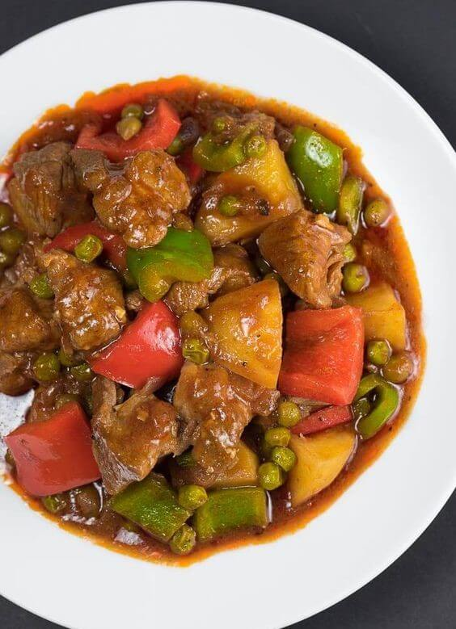
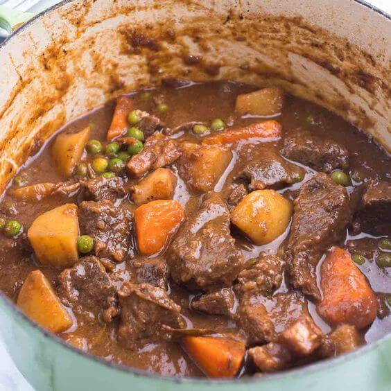

Sa mundong kulay-lasa ng mga lutuing Pinoy, ang Mechado ay isa sa mga nagbibigay-saya at kasiyahan sa ating
mga panlasa. Ito ay isang pagkaing puno ng sustansya at tatak Pilipino na naglalarawan ng kultura at
kasaysayan ng ating mga ninuno.
Ang salitang "Mechado" ay may mga pinagmulang Espanyol na "mecha," na nangangahulugang "tadah" o "lambot," at
"ado," na nangangahulugang "pinatuyong karne." Ito ay isang lutuing mayroong sabaw na kadalasang gawa sa
malambot na bahagi ng baka tulad ng kalitiran o katatagan. Karaniwang kasama rin sa Mechado ang bawang,
sibuyas, kamatis, at mga pampalasa tulad ng toyo, asin, at paminta. Ito ay kadalasang niluluto sa kawali o
kaldero at inihahain kasama ang mainit na kanin.
Ang Mechado ay higit sa isang simpleng putahe; ito ay isang pagsasama-sama ng lasa at pagkakapit-bisig ng mga
Pilipino. Ito ay nagmula sa mga kasanayang Espanyol at ipinahayag ng mga Pilipino sa pamamagitan ng pagpapalit
ng mga sangkap at pamamaraan ng pagluluto. Ang Mechado ay naglalarawan ng kahusayan at kagandahan ng kultura
ng mga Pilipino sa pag-akma ng mga dayuhang kasanayan sa sariling panlasa at pananaw.
Ang paghahanda ng Mechado ay hindi lamang tungkol sa lasa nito, kundi pati na rin sa pagsasama-sama at
pagmamahalan ng mga pamilyang Pilipino. Ito ay isang pagkaing karaniwang inihahanda sa mga okasyon at espesyal
na kainan. Sa bawat paghahain ng Mechado, nabubuo ang mga masayang alaala at samahan na nagtataguyod ng
pagkakapit-bisig at pagkakaisa ng mga Pilipino.
Ang Mechado ay naglalaman ng yaman ng lokal na mga sangkap sa Pilipinas. Mula sa malambot na bahagi ng baka na
nagpapahayag ng kalikasan ng ating bansa, hanggang sa mga tradisyunal na pampalasa tulad ng sibuyas, bawang,
at kamatis, ito ay nagpapahayag ng pagpapahalaga ng mga Pilipino sa sariling mga produkto at kalikasan.
Sa huli, ang Mechado ay hindi lamang isang pagkaing inilalapit sa bibig, ito ay isang simbolo ng sustansya,
tradisyon, at pagsasama ng mga Pilipino. Ito ay nagpapaalala sa atin na ang pagkain ay isang pagsasama-sama ng
kultura, kasaysayan, at pagkakakilanlan ng ating bansa.
Ang Mechado: Ang Pinaghalong Sustansya at Pagsasama ng Tradisyon


.jpg)